한국사능력검정시험-기본 (2020-08-08 기출문제)
1. (가) 시대의 생활 모습으로 옳은 것은? [1점]
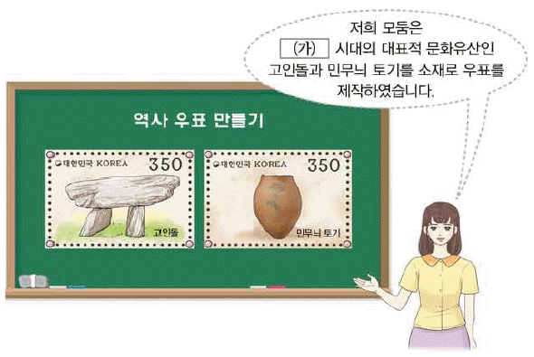
- 우경이 널리 보급되었다.
- 비파형 동검을 제작하였다.
- 철제 농기구를 사용하였다.
- 주로 동굴과 막집에서 거주하였다.
(정답률: 87%)

2. 밑줄 그은 ‘이 나라’에 대한 설명으로 옳은 것은? [1점]
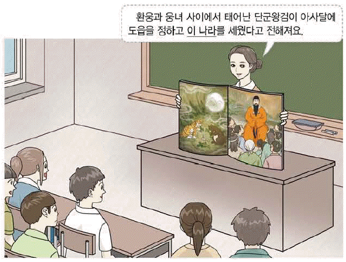
- 8조법으로 백성을 다스렸다.
- 영고라는 제천 행사를 열었다.
- 지배자로 신지, 읍차 등이 있었다.
- 읍락 간의 경계를 중시하는 책화가 있었다.
(정답률: 90%)
3. 다음 자료에 해당하는 나라를 지도에서 옳게 고른 것은? [3점]
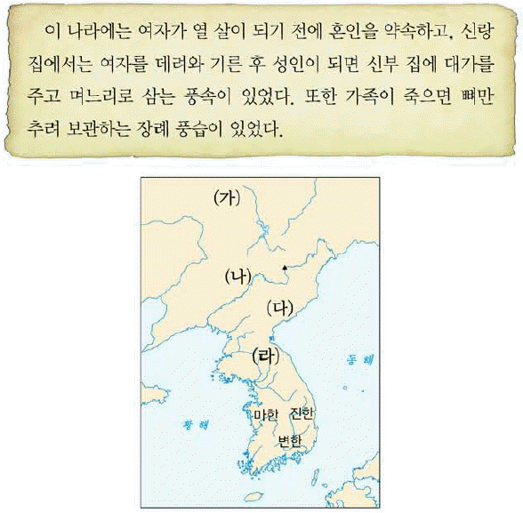
- (가)
- (나)
- (다)
- (라)
(정답률: 71%)
4. (가) 국가에 대한 설명으로 옳은 것은? [2점]
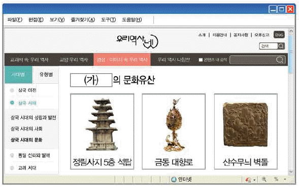
- 진대법을 시행하였다.
- 상수리 제도를 두었다.
- 지방에 22담로를 설치하였다.
- 골품제라는 신분 제도가 있었다.
(정답률: 78%)
5. 다음 사건이 일어난 시기를 연표에서 옳게 고른 것은? [3점]
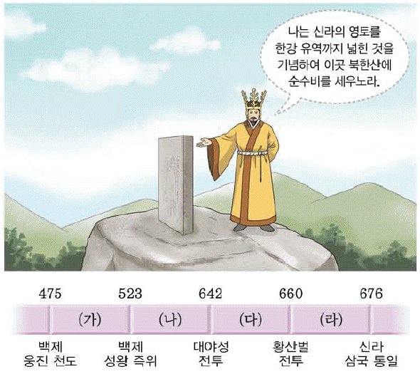
- (가)
- (나)
- (다)
- (라)
(정답률: 51%)
6. 밑줄 그은 ‘이 전투’로 옳은 것은? [1점]
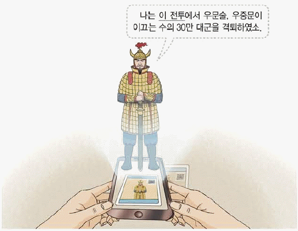
- 귀주 대첩
- 살수 대첩
- 안시성 전투
- 처인성 전투
(정답률: 82%)
7. 교사의 질문에 대한 학생의 대답으로 옳은 것은? [2점]
- ①
- ②
- ③
- ④
(정답률: 76%)
8. (가)에 들어갈 인물로 옳은 것은? [2점]
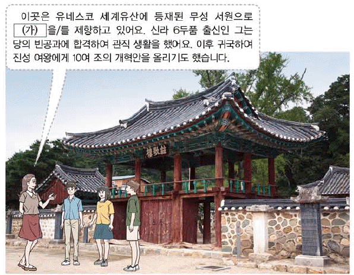
- 강수
- 설총
- 최승로
- 최치원
(정답률: 77%)
9. (가)에 들어갈 문화유산으로 적절한 것은? [2점]
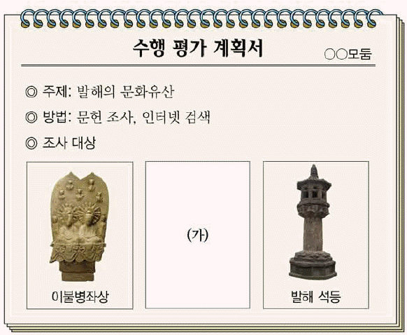
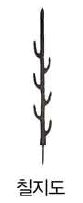
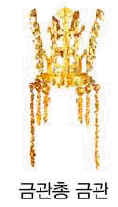
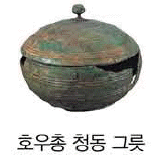
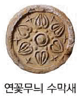
(정답률: 76%)
10. 밑줄 그은 ‘나’에 해당하는 인물로 옳은 것은? [1점]
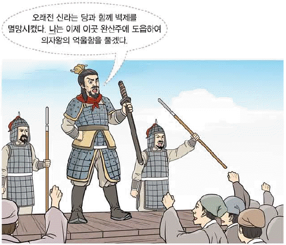
- 견훤
- 궁예
- 만적
- 양일
(정답률: 85%)
11. 다음 역사 다큐멘터리의 제목으로 가장 적절한 것은? [2점]
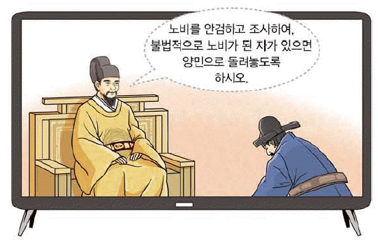
- 광종, 왕권 강화를 도모하다.
- 인종, 서경 천도를 계획하다.
- 태조, 북진 정책을 추진하다.
- 현종, 지방 제도를 정비하다.
(정답률: 80%)
12. (가)에 들어갈 문화유산으로 옳은 것은? [2점]
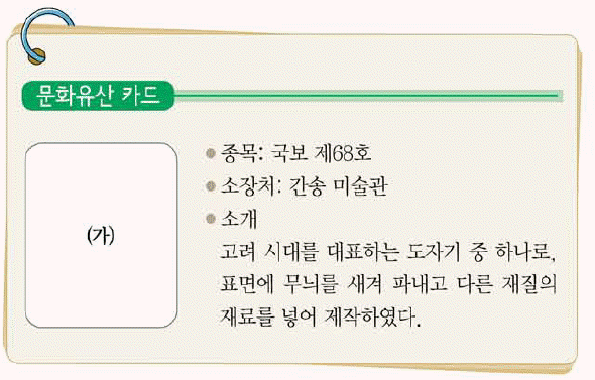
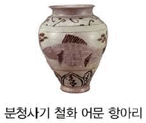
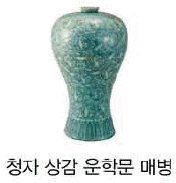
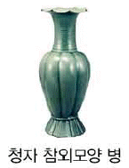
(정답률: 82%)
13. (가)에 들어갈 기구로 옳은 것은? [2점]
- 어사대
- 의정부
- 중추원
- 도병마사
(정답률: 57%)
14. (가) 시기에 있었던 사실로 옳은 것은? [3점]
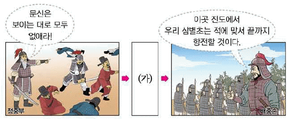
- 김헌창이 난을 일으켰다.
- 최우가 정방을 설치하였다.
- 묘청이 금 정벌을 주장하였다.
- 서희가 강동 6주를 획득하였다.
(정답률: 61%)
15. 다음 퀴즈의 정답으로 옳은 것은? [1점]
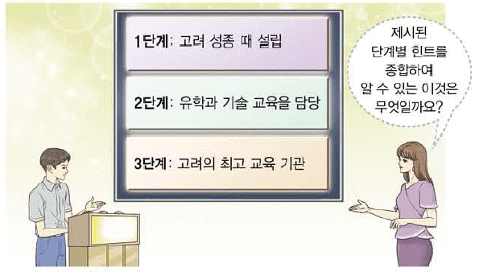
- 경당
- 향교
- 국자감
- 주자감
(정답률: 69%)
16. (가)에 들어갈 학습 주제로 적절한 것은? [2점]
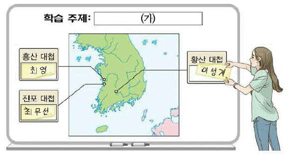
- 몽골의 침입과 항쟁
- 왜구의 침략과 격퇴
- 여진 정벌과 동북 9성 축조
- 서양 함대의 침입과 척화비 건립
(정답률: 73%)
17. (가)에 들어갈 내용으로 옳은 것은? [2점]
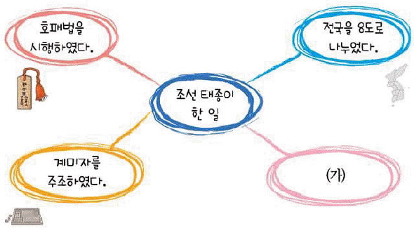
- 균역법을 시행하였다.
- 직전법을 실시하였다.
- 5군영 체제를 완성하였다
- 6조 직계제를 시행하였다.
(정답률: 66%)
18. 다음 가상 뉴스 보도 이후에 전개된 사실로 옳은 것은? [2점]
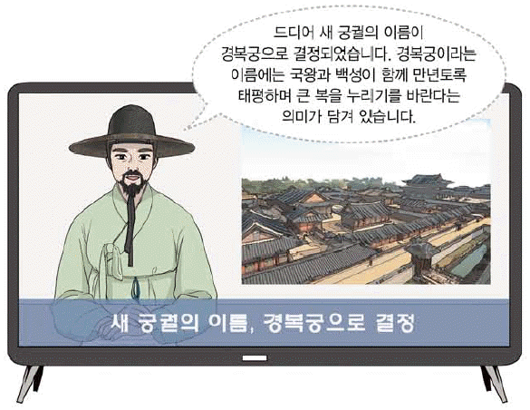
- 흑창이 운영되었다.
- 사심관 제도가 실시되었다.
- 한양에 시전이 설치되었다.
- 정동행성 이문소가 폐지되었다.
(정답률: 53%)
19. (가)에 들어갈 과학 기구로 옳은 것은? [1점]
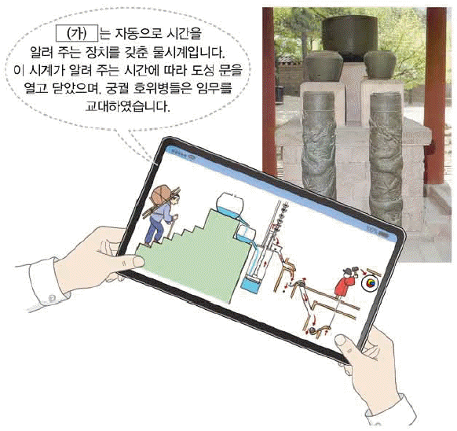
- 자격루
- 측우기
- 혼천의
- 앙부일구
(정답률: 74%)
20. 밑줄 그은 ‘이 왕’의 업적으로 옳은 것은? [1점]
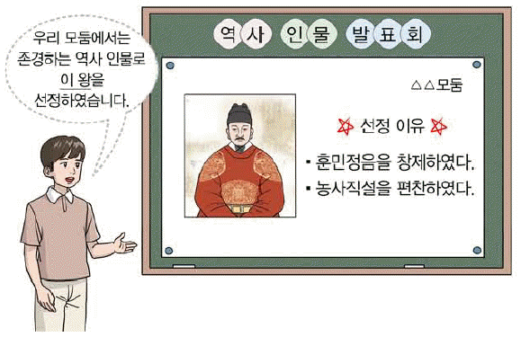
- 4군 6진을 개척하였다.
- 경국대전을 완성하였다.
- 대동여지도를 제작하였다.
- 백두산정계비를 건립하였다.
(정답률: 76%)
21. (가)에 들어갈 그림으로 옳은 것은? [2점]
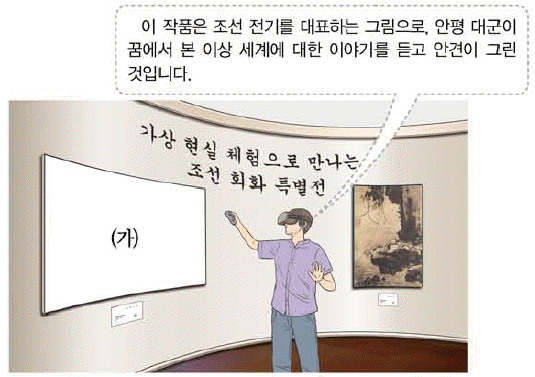
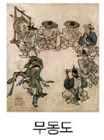
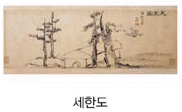
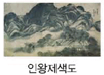
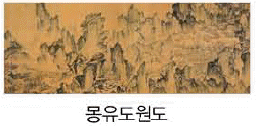
(정답률: 79%)
22. (가)에 들어갈 내용으로 옳은 것은? [2점]
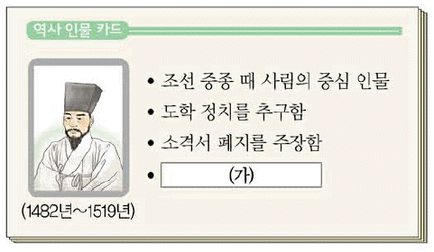
- 성학집요를 저술함
- 백운동 서원을 건립함
- 현량과 실시를 건의함
- 시헌력 도입을 주장함
(정답률: 62%)
23. (가) 전쟁 중에 있었던 사실로 옳은 것은? [2점]
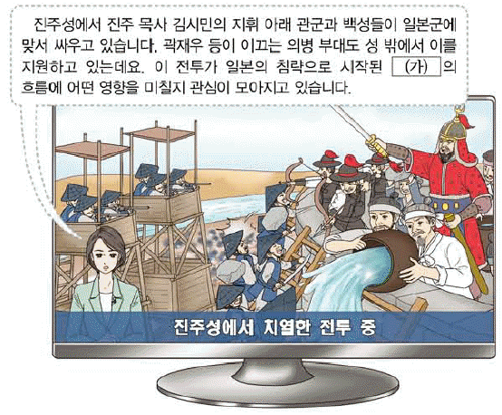
- 천리장성이 축조되었다.
- 권율이 행주산성에서 승리하였다.
- 황룡사 9층 목탑이 불타 없어졌다.
- 윤관이 별무반 편성을 건의하였다.
(정답률: 76%)
24. (가) 왕의 정책으로 옳은 것은? [2점]
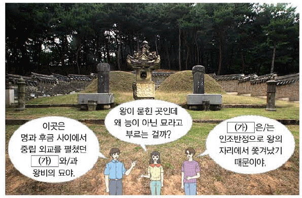
- 대전회통을 편찬하였다.
- 삼정이정청을 설치하였다.
- 초계문신제를 실시하였다.
- 대동법을 처음 시행하였다.
(정답률: 69%)
25. (가)∼(다) 불상을 만들어진 순서대로 옳게 나열한 것은? [3점]
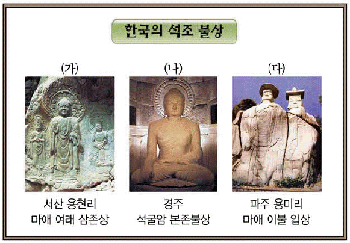
- (가)-(나)-(다)
- (가)-(다)-(나)
- (다)-(가)-(나)
- (다)-(나)-(가)
(정답률: 56%)
26. 다음에서 설명하는 명절로 옳은 것은? [1점]
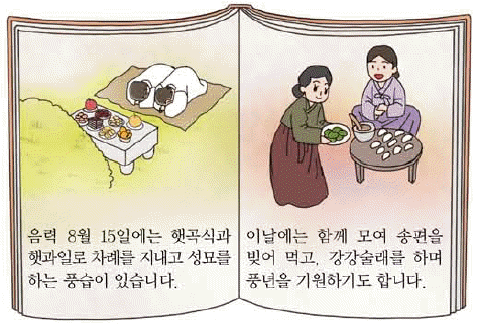
- 단오
- 설날
- 추석
- 한식
(정답률: 83%)
27. 다음을 통해 알 수 있는 지역을 지도에서 옳게 고른 것은? [2점]
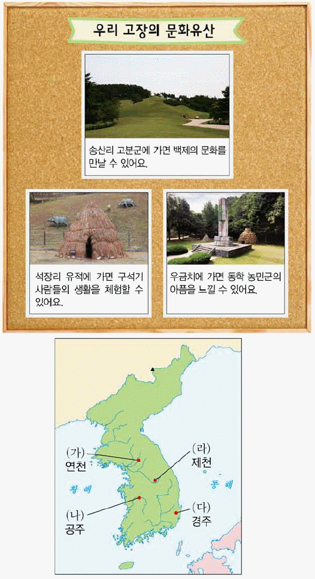
- (가)
- (나)
- (다)
- (라)
(정답률: 75%)
28. (가)에 들어갈 내용으로 옳지 않은 것은? [3점]
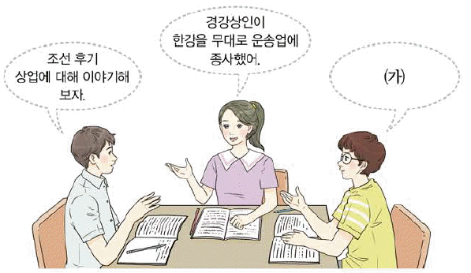
- 내상이 일본과의 무역을 주도했어.
- 벽란도에서 송과의 무역이 이루어졌어.
- 관청에 물품을 조달하는 공인이 활동했어.
- 정기 시장인 장시가 전국 각지에서 열렸어.
(정답률: 62%)
29. 다음 퀴즈의 정답으로 옳은 것은? [2점]
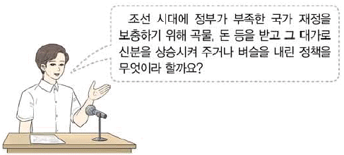
(정답률: 53%)
30. 다음 가상 인터뷰의 주인공에 대한 설명으로 옳은 것은? [2점]
- 동학을 창시하였다.
- 추사체를 창안하였다.
- 목민심서를 저술하였다.
- 사상 의학을 확립하였다.
(정답률: 71%)
31. (가)에 들어갈 인물로 옳은 것은? [2점]
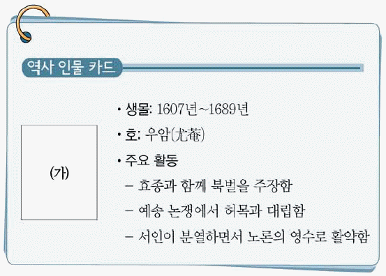
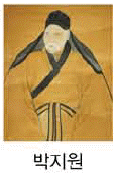
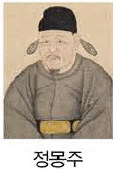
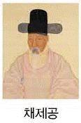
(정답률: 68%)
32. 다음 학생이 생각하고 있는 기구로 옳은 것은? [2점]
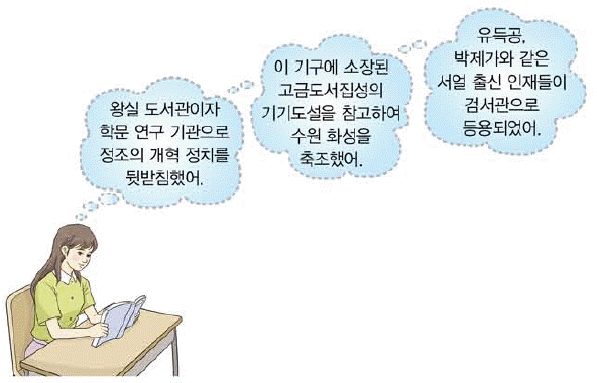
- 규장각
- 성균관
- 집현전
- 홍문관
(정답률: 63%)
33. 다음 대화가 이루어진 시기에 볼 수 있는 모습으로 적절한 것은? [2점]
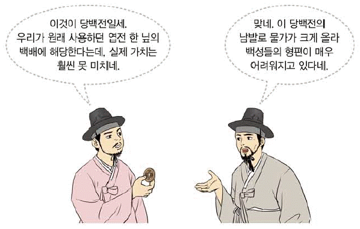
- 원에 공녀로 끌려가는 여인
- 원산 총파업에 참여하는 노동자
- 독립운동가를 감시하는 헌병 경찰
- 경복궁 중건 공사에 동원하는 농민
(정답률: 74%)
34. (가)∼(다)를 일어난 순서대로 옳게 나열한 것은? [2점]
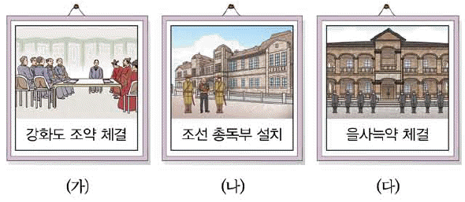
- (가)-(나)-(다)
- (가)-(다)-(나)
- (다)-(가)-(나)
- (다)-(나)-(가)
(정답률: 66%)
35. 다음에서 설명하는 사건의 영향으로 옳은 것은? [2점]
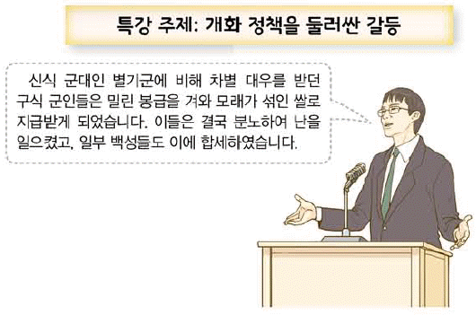
- 운요호 사건이 일어났다.
- 통리기무아문이 설치되었다.
- 외규장각 도서가 약탈되었다.
- 청의 내정 간섭이 심화되었다.
(정답률: 64%)
36. 다음 대화가 이루어진 시기에 볼 수 있는 모습으로 적절한 것은? [3점]
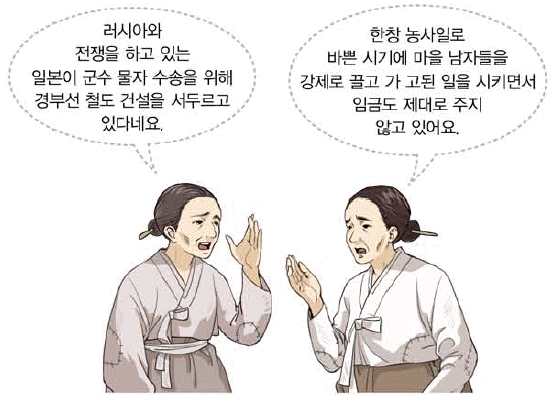
- 조총으로 무장한 훈련도감 군인
- 황국 신민 서사를 암송하는 학생
- 치안 유지법 위반으로 구속된 독립운동가
- 일본의 황무지 개간권 요구에 반대하는 보안회 회원
(정답률: 47%)
37. (가) 단체의 활동으로 옳은 것은? [2점]
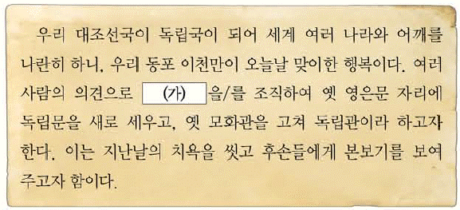
- 형평 운동을 전개하였다.
- 만민 공동회를 개최하였다.
- 한국 광복군을 창설하였다.
- 한글 맞춤법 통일안을 제정하였다.
(정답률: 61%)
38. (가) 인물에 대한 설명으로 옳은 것은? [3점]
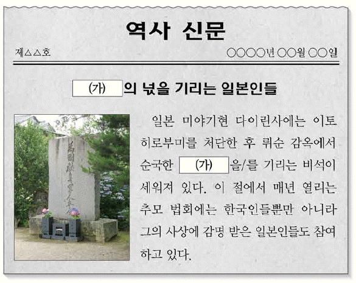
- 대종교를 창시하였다.
- 동양 평화론을 집필하였다.
- 조선 혁명 선언을 작성하였다.
- 파리 강화 회의에 파견되었다.
(정답률: 54%)
39. (가) 민족 운동에 대한 설명으로 옳은 것은? [2점]
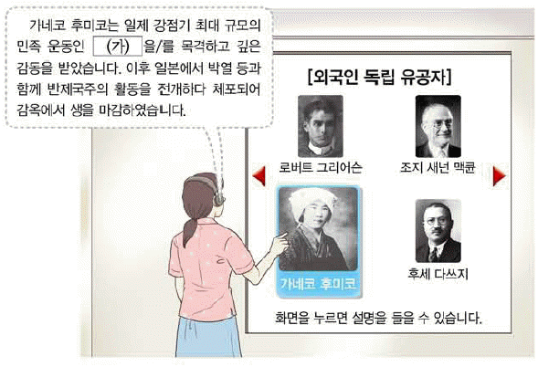
- 순종의 인산일에 일어났다.
- 대한매일신보의 후원을 받았다.
- 단발령에 대한 반발로 일어났다.
- 만주, 연해주, 미주 등지로 시위가 확산되었다.
(정답률: 63%)
40. (가)에 들어갈 인물로 옳은 것은? [1점]
- 나운규
- 남승룡
- 손기정
- 안창남
(정답률: 80%)
41. 교사의 질문에 대한 답변으로 옳은 것은? [3점]
- 신간회를 결성하였습니다.
- 국민 대표 회의를 소집하였습니다.
- 신흥 무관 학교를 설립하였습니다.
- 한·중 연합 작전을 전개하였습니다.
(정답률: 55%)
42. 밑줄 그은 ‘이 시기’에 볼 수 있는 모습으로 적절한 것은? [2점]
- 제중원에서 환자를 돌보는 의사
- 광주 학생 항일 운동을 취재하는 기자
- 교조 신원 운동에 참여하는 동학 교도
- 국채 보상 기성회에 성금을 내는 여성
(정답률: 51%)
43. 밑줄 그은 ‘ 이 운동’으로 옳은 것은? [2점]
- 브나로드 운동
- 문자 보급 운동
- 물산 장려 운동
- 민립 대학 설립 운동
(정답률: 72%)
44. (가)에 해당하는 인물로 옳은 것은? [1점]
(정답률: 60%)
45. 밑줄 그은 ‘위원회’로 옳은 것은? [2점]
- 남북 조절 위원회
- 미·소 공동 위원회
- 조선 건국 준비 위원회
- 반민족 행위 특별 조사 위원회
(정답률: 72%)
46. (가)∼(라)에 들어갈 내용으로 적절한 것은? [3점]
- (가) - 삼백 산업과 원조 경제 체제
- (나) - 중화학 공업의 육성과 석유 파동
- (다) - 산업 구조의 재편과 3저 호황
- (라) - 외환 위기 발생과 금 모으기 운동
(정답률: 47%)
47. (가)에 해당하는 인물로 옳은 것은? [2점]
(정답률: 73%)
48. 밑줄 그은 ‘이 사건’으로 옳은 것은? [2점]
- 4·19 혁명
- 6월 민주 항쟁
- 부·마 민주 항쟁
- 5·18 민주화 운동
(정답률: 72%)
49. (가) 정부 시기에 있었던 사실로 옳은 것은? [2점]
- 농지 개혁법이 제정되었다.
- 베트남에 국군이 파병되었다.
- 소련 및 중국과 국교가 수립되었다.
- 6·15 남북 공동 선언이 발표되었다.
(정답률: 50%)
50. (가)에 들어갈 사진으로 적절한 것은? [3점]
(정답률: 59%)